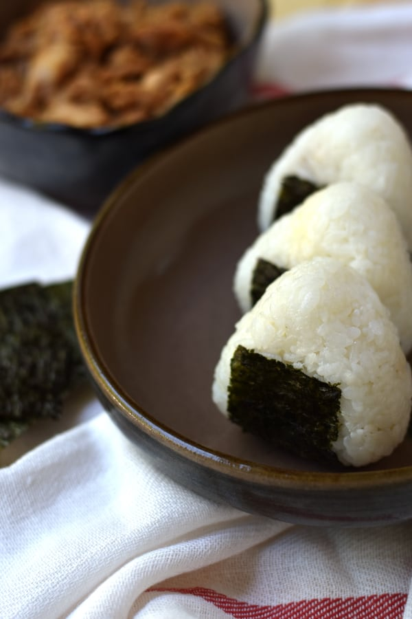

Yummiest Tuna Mayo Onigiri
This is one of my favorite recipes to make and it's super easy to make

Ingredients
For 1(One) serving you will need:
- 1 ½ cups of Japanese short-grain rice (2 rice cooker cups)
- 1 ⅔ or 1 ¾ cups of cold water
- 85 grams or 3 ounces of chunk tuna in oil (1 small US can)
- 3 tablespoons of Japanese mayonnaise (such as Kewpie)
- 1 teaspoon of soy sauce
- 6 sheets of Nori
- Salt to taste
Directions
- Wash and cook rice according to the packaging
- While the rice cooks, open the can of tuna and drain out any excess liquid. Add the tuna to a bowl along with the mayonnaise and soy sauce. Mix well to form a uniform paste.
- Prepare a bowl of water and a small bowl of salt.
- When the rice is cooked, stir it to fluff and then transfer it to a bowl to cool slightly and cover it with a damp towel to keep it from drying out.
- When the rice is cool enough to handle but still on the hot side, wet your hands in the water bowl. Dab your index finger in the bowl of salt and rub the salt around your hands.
- Working quickly, scoop 1/6 of the rice into your non-dominant hand and make a little well in the center of the rice.
- Add about 2 teaspoons of tuna mayo filling into the well and cover the tuna with the surrounding rice.
- Cup the hand holding the rice like a taco and then use 2-3 fingers of your opposite hand to shape the rice into a triangle.
- Toss the rice ball onto another side and then repeat the cupping and shaping step. Repeat until the onigiri is the desired shape.
Note: If you find shaping the Onirigi to be difficult, you can use a mold. I personally like this one
- Wrap the Tuna Mayo Onigiri with a sheet of nori, and repeat steps 5-10 until you run out of rice
Note: Onirigi is still onigiri if you find you don't like the addition or the nori! :)
Onigiri is best when eaten fresh so store in air tight container with moist kitchen towel to keep in moisture. Nori should be put right before serving to prevent sogginess.
Nutrition
| Calories 487kcal |
Carbohydrates 74g |
Protein 14g |
| Fat 13g |
Saturated Fat 2g |
Cholesterol 15mg |
| Sodium 324mg |
Potassium 201mg |
Fiber 1g |
| Sugar 1g |
Calcium 30mg |
Iron 1mg |
Back To Class Website